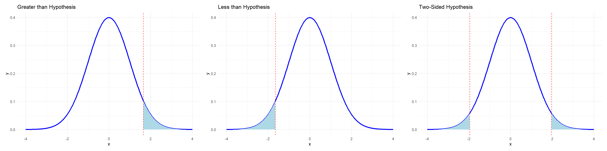

To Cadets:
This course, MA206, introduces you to the foundational principles of probability and statistics, emphasizing data literacy and inference. It begins with Block I, covering data types, visualization, and basic probability rules including counting and the behavior of random variables. Block II builds on this by exploring discrete and continuous distributions, the Central Limit Theorem, and tools for one-sample inference such as confidence intervals and hypothesis testing for proportions and means. Finally, Block III develops cadets’ ability to analyze relationships between variables through two-sample tests, linear regression, ANOVA, and goodness-of-fit testing. By the end of the course, cadets will be equipped to make sound, data-driven decisions grounded in statistical reasoning.
Six Step Method
Describe how the six steps of a statistical investigation apply to a particular statistical study:
Ask a research question
Design a study and collect data
Explore the data
Draw inferences beyond the data
Formulate conclusions
Look back and ahead
Think of and write research questions that could be investigated with a statistical study.
Identify the observational units and variables in a statistical study.
Classify variables as categorical or quantitative.
A Note on Technology:
In this course the primary tool used for data analysis is R. Throughout this course you will implement techniques for summarizing, visualizing, and analyzing data. The primary focus of this course is not for you to become masters in coding, however building on skills learned in CY105 will help your analysis in understanding how to use information technology to demonstrate successful outcomes in this course.
Of note, some of the functions we use in R require the package tidyverse, everytime you begin working in RStudio, the beginning code chunk should resemble:
#> echo:FALSElibrary(tidyverse)
── Attaching core tidyverse packages ──────────────────────── tidyverse 2.0.0 ──
✔ dplyr 1.1.4 ✔ readr 2.1.5
✔ forcats 1.0.0 ✔ stringr 1.5.1
✔ ggplot2 3.5.2 ✔ tibble 3.2.1
✔ lubridate 1.9.4 ✔ tidyr 1.3.1
✔ purrr 1.0.4
── Conflicts ────────────────────────────────────────── tidyverse_conflicts() ──
✖ dplyr::filter() masks stats::filter()
✖ dplyr::lag() masks stats::lag()
ℹ Use the conflicted package (<http://conflicted.r-lib.org/>) to force all conflicts to become errors
library(tidyr)library(patchwork)
BLOCK I: Data and Randomness
Types of Data, Sampling, and Bias
Fundamental to statistical analysis is understanding the types of data we encounter, the methods we use to collect them, and the potential sources of bias that can undermine the validity of our conclusions. We distinguish between categorical (qualitative) and quantitative (numerical) data. Categorical variables can further be broken down into nominal (color, baseball position, type of animal), ordinal (I had a very bad/somewhat bad/neutral/good/very good experience at CFT), and binary (Yes I passed Air Assault/No I did not). Quantitative data can also be broken down into either discrete or continuous. Understanding these distinctions is critical for selecting the correct tools for analysis and interpretation.
The two methods of sampling in this course will be through simple random sampling or convenience sampling. The difference in application is whether we can generalize our results to the larger population. As an example, say I do not have an exhaustive list of cadet ID numbers to randomly select from. Instead, I only can stand in Central Area after class at 1630 and survey the first 50 cadets that willingly take my survey. There is a certain sub-population I am probably missing (1st Reg, 4th Reg, Corps Squad, etc). This is a convenience sample. Instead, if I randomly select 50 C-Numbers from a complete list of the Corps obtained from the registrar, this would be a a true random sample of the Corps, whereas the former is what is known as selection bias.
Finally, we explore the concept of bias in data collection. We identify common sources such as selection bias, response bias, and measurement bias, and discuss how poor sampling practices or flawed survey design can distort findings. This lesson sets the stage for the rest of the course by highlighting the importance of thoughtful data collection and critical evaluation of data sources.
As an example let us look at a dataset aggregated from over 50,000 diamonds:
#> echo: falseset.seed(1991)data(diamonds)df <- diamonds %>%sample_n(size=1000)df %>% head
# A tibble: 6 × 10
carat cut color clarity depth table price x y z
<dbl> <ord> <ord> <ord> <dbl> <dbl> <int> <dbl> <dbl> <dbl>
1 1.02 Good G VS2 63.8 59 6080 6.34 6.27 4.02
2 0.31 Ideal F VVS1 61.9 53.5 882 4.36 4.39 2.71
3 0.6 Premium D SI2 61.3 61 1428 5.46 5.4 3.33
4 0.41 Ideal E IF 62.1 54 1419 4.75 4.81 2.97
5 0.72 Very Good H VS1 62.2 54 2877 5.74 5.76 3.57
6 1.2 Ideal F VS2 62.6 56 8486 6.78 6.73 4.23
Each of the rows is an individual diamond, generally called an observation. Each of the columns are unique aspects measured for every observation, called variables. Variables are either categorical, qualitative aspects of each measurement, or quantitative, a numbered entry.
Exploratory Data Analysis
Understanding, communicating, and interpreting your data is paramount to any initial data analysis project. These are done through numerous visualizations and summary statistics which we will learn to regularly implement when given any new dataset.
One Variable – Visualizations and Summary Statistics
Starting with a variable-by-variable approach is a natural first step. This is done rapidly in R with the following few functions:
Histograms tell us where most of the values for a quantitative variable lie in its given distribution. We can determine skewness, a measure of how lopsided the data appear or if there are any asymmetries or tails.
Similar to a histogram, a boxplot will tell us exactly where the median, 1st and 3rd quartiles, and outliers exist for any quantitative variable. The ‘whiskers’ are determined by \(1.5 \times IQR\) where the inter-quartile range is the \(3rd - 1st\) quartiles.
# A tibble: 7 × 7
Variable Mean Median SD Var Min Max
<chr> <dbl> <dbl> <dbl> <dbl> <dbl> <dbl>
1 carat 0.790 0.7 0.462 0.213 0.23 3.24
2 depth 61.8 61.9 1.40 1.97 56.3 68.9
3 table 57.5 57 2.26 5.11 50 66
4 price 3874. 2387 3913. 15308046. 337 18692
5 x 5.72 5.68 1.10 1.21 3.88 9.44
6 y 5.72 5.68 1.09 1.20 3.9 9.4
7 z 3.53 3.52 0.677 0.458 2.39 5.85
The above are the predominant statistics you want to discern for every quantitative variable in your dataset. The benchmark location statistics are the mean, median, max, and min, while the standard deviation and variance are measures of how spread out the data are relative to one another.
A scatterplot is the main tool to visualize and identify a relationship between two quantitative variables. Oftentimes, coloring each observation by another categorical variable is a way to maximize effectiveness of a single plot, as you are encoding more information within the same space.
#> echo: falsep10 <- df %>%group_by(cut) %>%summarise(avg_price =mean(price)) %>%ggplot(aes(x = cut, y = avg_price)) +geom_bar(stat ="identity", fill ="pink") +labs(title ="Average Price by Diamond Cut Quality",x ="Diamond Cut",y ="Average Price ($)" ) +theme_minimal()p11 <- df %>%group_by(color) %>%summarise(avg_price =mean(price)) %>%ggplot(aes(x = color, y = avg_price)) +geom_bar(stat ="identity", fill ="skyblue") +labs(title ="Average Price by Diamond Color Rating",x ="Diamond Color",y ="Average Price ($)" ) +theme_minimal()p12 <- df %>%group_by(clarity) %>%summarise(avg_price =mean(price)) %>%ggplot(aes(x = clarity, y = avg_price)) +geom_bar(stat ="identity", fill ="magenta") +labs(title ="Average Price by Diamond Clarity",x ="Diamond Clarity",y ="Average Price ($)" ) +theme_minimal()p10 | p11 | p12
carat depth table price x y
carat 1.000000000 -0.003309893 0.2218141 0.91021728 0.9771650 0.97682747
depth -0.003309893 1.000000000 -0.3160834 -0.02418736 -0.0637861 -0.06707873
table 0.221814133 -0.316083433 1.0000000 0.16644576 0.2396640 0.23527498
price 0.910217282 -0.024187362 0.1664458 1.00000000 0.8763495 0.87899268
x 0.977165035 -0.063786104 0.2396640 0.87634955 1.0000000 0.99885498
y 0.976827473 -0.067078728 0.2352750 0.87899268 0.9988550 1.00000000
z 0.976811196 0.058609118 0.1951975 0.87535333 0.9913793 0.99109238
z
carat 0.97681120
depth 0.05860912
table 0.19519747
price 0.87535333
x 0.99137925
y 0.99109238
z 1.00000000
Correlation is the only multivariate summary statistic we will be using in this course, used to describe how two variables tend to move in tandem with one another. A perfect linear association evokes a correlation of 1, the opposite being a perfect negative association with a correlation of -1. No association is implied by a correlation near 0.
Mathematically: > Definition > For any two variables X,Y, the correlation of X and Y are: \[
r = \frac{\sum_{i=1}^n (x_i - \bar{x})(y_i-\bar{y})}{\sum_{i=1}^n (x_i - \bar{x})^2\sum_{i=1}^n (y_i - \bar{y})^2}
\]
Probability
Sample Space and Random Experiment (\(\Omega\))
A random experiment is a process that produces an outcome which cannot be predicted with certainty in advance. It must be well-defined, have more than one possible outcome, and be repeatable under similar conditions. Each performance of the experiment results in a single outcome from the sample space. The sample space is the set of all possible outcomes of a random experiment.
Definition:
The sample space is the set of all possible outcomes of a random experiment, denoted \(\Omega\).
An event is a subset of the sample space. It can represent one or more outcomes.
If all outcomes in \(\Omega\) are equally likely, then for any event \(A\):
\[
\mathbb{P}(A) = \frac{\text{Number of outcomes in } A}{\text{Total outcomes in } \Omega}
\]
Examples:
Tossing a coin once: \(\Omega = {\text{Heads}, \text{Tails}}\)
Rolling a 6-sided die: \(\Omega = {1, 2, 3, 4, 5, 6}\)
Letter grade in MA206: \(\Omega = {A, B, C, D, F}\)
Number of emails received in an hour: \(\Omega = {0, 1, 2, \dots}\)
Probability Measure (\(\mathbb{P}\))
A probability measure is a rule, denoted \(\mathbb{P}\), that assigns a number between 0 and 1 to every event in a collection of events (called a sigma-algebra, denoted ). These probabilities must follow three key rules, known as the axioms of probability.
Axioms of Probability
Non-Negativity
For any event \(A\), the probability is never negative: \[
\mathbb{P}(A) \geq 0
\]
Normalization
The probability of one of the events happening over the entire sample space is 1: \[
\mathbb{P}(\Omega) = 1
\]
Additivity (for disjoint events)
If events \(A_1, A_2, A_3, \dots\) are mutually exclusive (no overlap), then the probability that any one of them occurs is the sum of their individual probabilities: \[
\mathbb{P}\left(\bigcup_{i=1}^{\infty} A_i\right) = \mathbb{P}(A_1) + \mathbb{P}(A_2) + \mathbb{P}(A_3) + \cdots
\]
Example (Simple):
Let \(A\), \(B\), and \(C\) be outcomes when rolling a die:
These three rules form the mathematical foundation of all probability calculations — everything else builds on them.
Axioms of Probability
The complement of an event ( A ), written ( A^c ), consists of all outcomes in ( ) that are not in ( A ):
\[
\mathbb{P}(A) + \mathbb{P}(A^c) = 1
\]
The intersection $ A B $ consists of outcomes where both \(A\) and \(B\) occur.
The union\(A \cup B\) consists of outcomes where either \(A\), \(B\), or both occur:
\[
\mathbb{P}(A \cup B) = \mathbb{P}(A) + \mathbb{P}(B) - \mathbb{P}(A \cap B)
\]
Two events \(A\) and \(B\) are disjoint (mutually exclusive) if they cannot both occur:
\[
A \cap B = \varnothing \quad \text{and} \quad \mathbb{P}(A \cap B) = 0
\]
Conditional Probability
For events \(A\) and \(B\) with $0 < P(B) $, the conditional probability of \(A\) given \(B\) is:
\[
P(A \mid B) = \frac{P(A \cap B)}{P(B)}
\]
Example: One card is drawn from a standard deck.
Let \(A\): card is a Queen, and \(B\): card is a face card.
Find \(P(A)\), \(P(B)\), and \(P(A \mid B)\).
Law of Total Probability
Definition:
If \(E_1, \dots, E_n\) is a partition of the sample space (mutually exclusive and exhaustive), then for any event \(A\):
\[
P(A) = \sum_{i=1}^{n} P(E_i) P(A \mid E_i)
\]
Example:
A fair die is rolled. Let event A: “an even number is rolled”.
Let:
- \(E_1\): roll is 1 or 2
- \(E_2\): roll is 3 or 4
- \(E_3\): roll is 5 or 6
Find:
- \(P(A \mid E_1)\), \(P(A \mid E_2)\), \(P(A \mid E_3)\)
- Then use the Law of Total Probability to find \(P(A)\)
Bayes’ Theorem
Definition:
If \(E_1, \dots, E_n\) is a partition of the sample space and \(P(A) > 0\), then:
Example:
Two urns:
- Urn 1: 1 red, 1 blue
- Urn 2: 3 red, 1 blue
Pick an urn at random, then draw one ball.
If the ball is red, what is the probability it came from Urn 1?
Counting Principles
Before we can begin a thorough treatment of probability, some concepts in counting are needed to identify four common situations. These arise depending on when things are “allowed” to repeat or the “order” items are chosen in matters. The ability to discern when these four situations arise is more than half the battle.
Ordered with Replacement
Think of the number of ways of choosing a 4-digit passcode on your phone.
The order of the numbers matters, and you are allowed to repeat the same number. So how many arrangements are there? Since repetition is allowed and order matters, there are 10 digits for each position, giving:
Think of the number of ways I can create a batting order from 9 position players.
The order still matters, but players cannot be repeated. This is a permutation — an ordered arrangement without replacement.
\[
{}_nP_r = P(n, r) = \frac{n!}{(n - r)!}
\]
For example, the number of ways to assign the first 3 batting positions from 9 players:
Think of how many ways you can choose 3 scoops of ice cream from 5 unique flavors without repeats.
Because order doesn’t matter and repeats aren’t allowed, we use combinations:
Think of how many different combinations of 3 scoop ice cream cones you can make with 5 unique flavors while allowing repeats.
This is the trickiest scenario. The order doesn’t matter, and repetition is allowed. The formula is:
\[
\text{Unordered Arrangements with Replacement} = \binom{r+n-1}{r} = \frac{(r+n-1)!}{r!(n-1)!}
\]
Example: choosing 3 scoops from 5 flavors (with repeats):
\[
\binom{3+5-1}{3} = \binom{7}{3} = 35
\]
This can be understood using the stars and bars method: selecting \(r\) scoops with \(n-1\) dividers. Imagine representing each scoop as a ★ (star) and using vertical bars | to separate flavor types. To choose \(r\) scoops from \(n\) flavors, you need \(r\) stars (for the scoops) and \(n - 1\) bars (to divide them into \(n\) categories). For example, if \(r = 3\) scoops and \(n = 5\) flavors, you arrange 3 stars and 4 bars in a row. One possible arrangement is ★ | ★★ | | |, which represents 1 scoop of flavor 1, 2 scoops of flavor 2, and 0 scoops of flavors 3, 4, and 5. The number of such arrangements is given by the combination formula \(\binom{r + n - 1}{r}\), since you are choosing positions for the \(r\) indistinguishable stars among the \(r + n - 1\) total positions (stars and bars combined).
Note: The above section may seem like it came out of nowhere, that is okay. A fundamentally difficulty inherent in probability is finding the sample space or event space due to finding the various different combinations/permutations sequences of different possibilities. To elaborate consider the next example:
Example: No Matching Pairs in a Shoe Sample {.unnumbered}
A closet contains \(n\) pairs of shoes (so \(2n\) total shoes). If \(2r\) shoes are chosen at random (where \(2r < n\)), what is the probability that no matching pair is selected?
We are selecting \(2r\) shoes such that no left and right shoe from the same pair are both chosen.
Strategy: 1. First choose \(2r\)distinct pairs from the \(n\) available — there are \(\binom{n}{2r}\) ways to do this.
2. From each of these \(2r\) selected pairs, choose only one shoe (either left or right) — there are \(2^{2r}\) ways to do this.
3. The total number of ways to choose any\(2r\) shoes out of \(2n\) is \(\binom{2n}{2r}\).
Definition (Random Variable):
A random variable is a mapping that assigns a real number to every outcome in the sample space: \[
X: \Omega \rightarrow \mathbb{R}
\]
Definition (Cumulative Distribution Function):
A cumulative distribution function (CDF) is a function \(F_X: \mathbb{R} \rightarrow [0,1]\) defined by: \[
F_X(x) = \mathbb{P}(X \le x)
\]
Discrete Random Variables
Definition (Discrete Random Variable):
A discrete random variable is one that takes countably many values in \(\mathbb{R}\).
Its probability mass function is given by: \[
f_X(x) = \mathbb{P}(X = x)
\]
Definition (Expectation):
The expected value (mean) of a discrete random variable \(X\) is: \[
\mathbb{E}[X] = \sum_x x \cdot \mathbb{P}(X = x)
\]
Definition (Variance):
The variance of a discrete random variable \(X\) is: \[
\mathrm{Var}(X) = \mathbb{E}\left[(X - \mathbb{E}[X])^2\right] = \sum_x (x - \mathbb{E}[X])^2 \cdot \mathbb{P}(X = x)
\]
Binomial Distribution:
Let \(X \sim \text{Binomial}(n, p)\) where \(n \in \mathbb{N}\) and \(0 < p < 1\).
Probability Mass Function (PMF): \[
\mathbb{P}(X = k) = \binom{n}{k} p^k (1 - p)^{n - k}, \quad \text{for } k = 0, 1, \dots, n
\]
Cumulative Distribution Function (CDF): \[
F_X(x) = \mathbb{P}(X \le x) = \sum_{k=0}^{\lfloor x \rfloor} \binom{n}{k} p^k (1 - p)^{n - k}
\]
Expected Value: \[
\mathbb{E}[X] = np
\]
Variance: \[
\mathrm{Var}(X) = np(1 - p)
\]
Geometric Distribution:
Let \(X \sim \text{Geometric}(p)\) be the number of trials until the first success (including the success), where \(0 < p < 1\).
Probability Mass Function (PMF): \[
\mathbb{P}(X = k) = (1 - p)^{k - 1} p, \quad \text{for } k = 1, 2, 3, \dots
\]
Cumulative Distribution Function (CDF): \[
F_X(x) = \mathbb{P}(X \le x) = 1 - (1 - p)^{\lfloor x \rfloor}
\]
The Central Limit Theorem (CLT) is one of the most important results in statistics. It states that the sampling distribution of the sample mean \(\bar{X}\) becomes approximately normal as the sample size \(n\) increases, regardless of the shape of the population distribution (provided it has finite mean and variance).
Specifically, if \(X_1, X_2, \dots, X_n\) are i.i.d. random variables with mean \(\mu\) and variance \(\sigma^2\), then:
This justifies the widespread use of the normal distribution to approximate sample means in practice.
Credit: The New York Times
Normal Distribution
Normal Distribution
Let \(X \sim \mathcal{N}(\mu, \sigma^2)\), where \(\mu \in \mathbb{R}\) and \(\sigma > 0\).
Probability Density Function (PDF): \[
f(x) = \frac{1}{\sqrt{2\pi \sigma^2}} \exp\left( -\frac{(x - \mu)^2}{2\sigma^2} \right), \quad x \in \mathbb{R}
\]
Cumulative Distribution Function (CDF):
There is no closed-form expression, but it is denoted as: \[
F_X(x) = \mathbb{P}(X \le x) = \Phi\left( \frac{x - \mu}{\sigma} \right)
\]
where \(\Phi\) is the standard normal CDF.
Expected Value: \[
\mathbb{E}[X] = \mu
\]
Variance: \[
\mathrm{Var}(X) = \sigma^2
\]
Exponential Distribution
Exponential Distribution
Let \(X \sim \text{Exponential}(\lambda)\) with \(\lambda > 0\).
Probability Density Function (PDF): \[
f(x) = \lambda e^{-\lambda x}, \quad x \ge 0
\]
Cumulative Distribution Function (CDF): \[
F_X(x) = \mathbb{P}(X \le x) = 1 - e^{-\lambda x}, \quad x \ge 0
\]
A confidence interval (CI) gives a range of plausible values for a population parameter based on a sample statistic. The general structure of any confidence interval is:
\[
\text{point estimate} \ \pm \ \text{margin of error}
\]
More specifically, for large samples or when the sampling distribution of the estimate is approximately normal:
\(\hat{\theta}\) is the point estimate (e.g., \(\bar{x}\) for the mean, \(\hat{p}\) for a proportion)
\(z^*\) is the critical value from the standard normal distribution (e.g., 1.96 for 95% confidence)
\(\text{SE}(\hat{\theta})\) is the standard error of the estimate
This structure applies to many common settings:
CI for a population mean: \[
\bar{x} \pm z^* \cdot \frac{s}{\sqrt{n}}
\]
CI for a population proportion: \[
\hat{p} \pm z^* \cdot \sqrt{\frac{\hat{p}(1 - \hat{p})}{n}}
\]
Interpretation:
“We are 95% confident that the true population parameter lies within this interval.”
This does not mean there’s a 95% probability the parameter is in the interval — rather, it means that 95% of all intervals computed from repeated samples in this manner would contain the true parameter.
One Sample Hypothesis Testing
Hypothesis testing is a formal method for making inferences about a population using sample data. The whole test aspect is questioning if the statistic your sample shows is significantly different than a certain value in question. You have two underlying premises, referred to as the null and alternative hypotheses. The null hypothesis assumes that there is no difference: the statistic from your value is the same as the value you are testing. The alternative conflicts the null and says they are different. The process involves:
State the null and alternative hypotheses. There are three different variants to create your hypotheses statements depending on what the question being asked entails.
Greater than Alternative Hypothesis
\[
H_0: Parameter = Value \ in \ Question \\
H_A: Parameter > Value \ in \ Question
\]
The entire inference aspect of hypothesis testing is that you are using your sample statistic, a tangible aspect of your data, to make an argument about the population parameter, an entity that is unknown to you. This is why the hypotheses are written in terms of the parameter. You are testing whether an aspect or parameter about the population is greater than a benchmark value decided by you in advance.
Less than Alternative Hypothesis
\[
H_0: Parameter = Value \ in \ Question \\
H_A: Parameter < Value \ in \ Question \\
\]
Very similarly, the less than hypothesis is also a one-sided hypothesis test in that you are only testing one side of the value, abeit this time if the population parameter is less than the tested value.
Not equal to Alternative Hypothesis
\[
H_0: Parameter = Value \ in \ Question \\
H_A: Parameter \neq Value \ in \ Question \\
\]
This is the only two-sided hypothesis test, denoted with the not equal to alternative hypothesis. Both sides must be accounted for in this test, and therefore as we will see shortly require more evidence for significance.
Choose a significance level \(\alpha\).
This is the threshold you will also decide to inform your certainty in your conclusions. As seen previously, unless you are finding the probability that something will happen in the entire sample space (which happens probability 1); ie, there are no absolutes. Therefore there is always a chance that your conclusion will be wrong. Here is where you decide how “often” you are willing to be wrong. Is it 1% of the time? 5% of the time? Think of the significance level as choosing the percentage of the time you are willing to be wrong in your conclusion, (I know this sounds weird). A common \(\alpha\) is 5%.
Compute the test statistic.
Compute the relevant summary statistic. In this course you will either be calculating a sample proportion, denoted \(\hat{p}\) if the variable of interest is categorical or the sample mean \(\bar{X}\) if quantitative.
Standardize the test statistic.
This step transforms your statistic so it can be treated as a random variable from a named distribution. For proportions this will be a Normal Random Variable, however if quantitative it will be a t-distributed random variable.
Credit: 365 Data Science
Determine the p-value.
Once we have the standardized statistic, it can be treated as either a Standard Normal Random Variable or Student’s-t Random Variable. This is where the alternative hypotheses come in to play to determine the p-value: the probability that if the null hypothesis is indeed true you choose to make an argument supporting the alternative. To find the probability of a certain event happening in a continuous random variable, you integrate the probability density function with the limits of integration being the range of values the random variable could take. Both the Standard Normal and Student’s-t are continuous, so depending on your alternative hypothesis, your p-value is calculated by either of the following:
#> echo:false# Parametersmu <-0sigma <-1# Full normal curvex <-seq(mu -4*sigma, mu +4*sigma, length.out =1000)df <-data.frame(x = x, y =dnorm(x, mean = mu, sd = sigma))# Shade regionsless_df <-subset(df, x <=-1.96)more_df <-subset(df, x >=1.96)both_df <-subset(df, x <=-1.96| x >=1.96)# Left tailp_less <-ggplot(df, aes(x = x, y = y)) +geom_line(color ="blue", linewidth =1.2) +geom_area(data = less_df, aes(x = x, y = y), fill ="lightblue") +geom_vline(xintercept =-1.96, linetype ="dashed", color ="red") +theme_minimal()# Right tailp_more <-ggplot(df, aes(x = x, y = y)) +geom_line(color ="blue", linewidth =1.2) +geom_area(data = more_df, aes(x = x, y = y), fill ="lightblue") +geom_vline(xintercept =1.96, linetype ="dashed", color ="red") +theme_minimal()# Both tailsp_both <-ggplot(df, aes(x = x, y = y)) +geom_line(color ="blue", linewidth =1.2) +geom_area(data = less_df, aes(x = x, y = y), fill ="lightblue") +geom_area(data = more_df, aes(x=x, y=y), fill ='lightblue')+geom_vline(xintercept =c(-1.96, 1.96), linetype ="dashed", color ="red") +theme_minimal()# Show side by sidep_more | p_less | p_both

Making a conclusion based on comparison.
Once a p-value is obtained, reference it to the significance level chosen. If the p-value is greater than \(\alpha\), you fail to reject the null hypothesis, if it is smaller, you reject the null hypothesis, and then state what that means in the context of the problem.
Single Proportion
We conduct inference on a population proportion \(\pi\) relative to a hypothesized value \(\pi_0\). The test statistic is:
\[
z = \frac{\hat{p} - \pi}{\sqrt{\frac{\pi(1 - \pi)}{n}}}
\]
Example: Test if more than 40% of diamonds are “Ideal” cut
# Null hypothesis: p = 0.20pi <-0.4n <-nrow(diamonds)phat <-mean(diamonds$cut =="Ideal")# Test statistic and p-valuez <- (phat - pi) /sqrt(pi * (1- pi) / n)p_value <-1-pnorm(z)cat("Z-statistic:", round(z, 3), "\n")
Z-statistic: -0.22
cat("P-value:", round(p_value, 4))
P-value: 0.587
Single Mean
We conduct inference on a population mean \(\mu\) relative to a hypothesized value \(\mu_0\). The test statistic is:
\[
t = \frac{\bar{x} - \mu_0}{s / \sqrt{n}}
\]
Example: Test if the average diamond price is $4000.
mu0 <-4000x_bar <-mean(diamonds$price)s <-sd(diamonds$price)n <-length(diamonds$price)# Test statistic and p-valuet_stat <- (x_bar - mu0) / (s /sqrt(n))p_value <-2*(1-pt(abs(t_stat), df = n -1))cat("T-statistic:", round(t_stat, 3), "\n")
T-statistic: -3.912
cat("P-value:", round(p_value, 4))
P-value: 1e-04
Experimental Design: Power, Type I / Type II Error
In any hypothesis test, we face the possibility of making incorrect conclusions. These are formalized through Type I and Type II errors:
Type I Error (\(\alpha\)): Rejecting the null hypothesis when it is actually true. This is controlled by the significance level of the test, often set to \(\alpha = 0.05\).
Type II Error (\(\beta\)): Failing to reject the null hypothesis when the alternative is actually true. This is harder to control and depends on the true parameter, sample size, and variance.
Power of the Test: The probability of correctly rejecting the null hypothesis when the alternative is true: \[
\text{Power} = 1 - \beta
\]
A powerful test detects meaningful effects and minimizes Type II error. Power increases when: - Sample size increases (\(n \uparrow\)) - Effect size increases (true parameter is farther from null) - Variability decreases (standard deviation \(\downarrow\)) - Significance level \(\alpha\) increases (easier to reject null)
Visual Summary
This diagram shows: - The blue curve is the null distribution (centered at 0). - The red dashed curve is the alternative distribution (shifted mean). - The dotted vertical line is the critical value (e.g., \(z = 1.645\) for \(\alpha = 0.05\) in a one-sided test). - Area to the right of this cutoff under the null curve is \(\alpha\). - Area to the left of this cutoff under the alternative curve is \(\beta\). - The remaining area under the red curve (right tail) is power.
BLOCK III: Multivariate Inference
Two Sample Hypothesis Testing
Difference of Proportions
We compare two population proportions to determine whether there is a significant difference between them. The test statistic is:
Welch Two Sample t-test
data: price by cut
t = 9.7484, df = 1894.8, p-value < 2.2e-16
alternative hypothesis: true difference in means between group Fair and group Ideal is not equal to 0
95 percent confidence interval:
719.9065 1082.5251
sample estimates:
mean in group Fair mean in group Ideal
4358.758 3457.542
This performs a two-sample t-test, assuming unequal variances by default. The null hypothesis is that the means are equal.
Paired Data
In paired designs, each observation in one group is paired with a related observation in the other. Since diamonds has no natural pairing, we’ll simulate a paired example.
Example (Simulated): Price before and after resizing a set of diamonds
set.seed(123)# Simulate paired prices: original and discountedn <-100original_price <-sample(diamonds$price, n)discounted_price <- original_price *runif(n, 0.85, 0.95)t.test(original_price, discounted_price, paired =TRUE)
Paired t-test
data: original_price and discounted_price
t = 8.9496, df = 99, p-value = 2.132e-14
alternative hypothesis: true mean difference is not equal to 0
95 percent confidence interval:
342.2012 537.1645
sample estimates:
mean difference
439.6829
This tests whether the mean price before and after a simulated discount differs significantly.